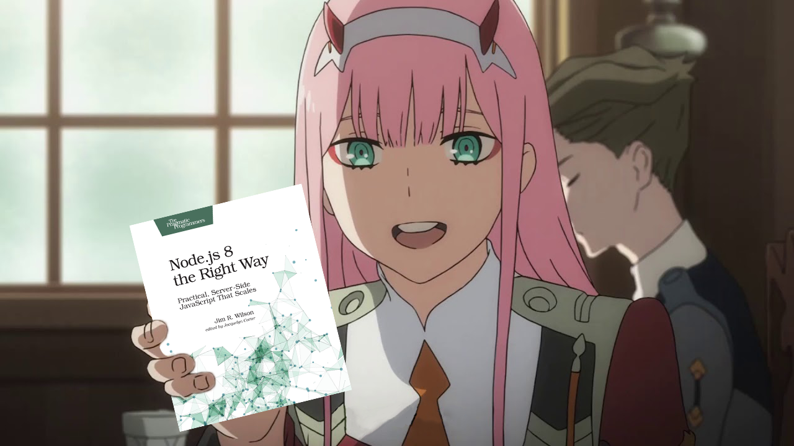

____ ____ ____ ____ ____ ____ ____ ____ ||a |||s |||t |||r |||o |||l |||u |||l || ||__|||__|||__|||__|||__|||__|||__|||__|| |/__\|/__\|/__\|/__\|/__\|/__\|/__\|/__\|
Hi, I'm astrolul (or astro), I'm just a random nerd on the internet who is interested in GNU/Linux
and Open Source Software. You could also consider me an Eminem stan, My favorite albums from him are
The Eminem Show and Infinite.
